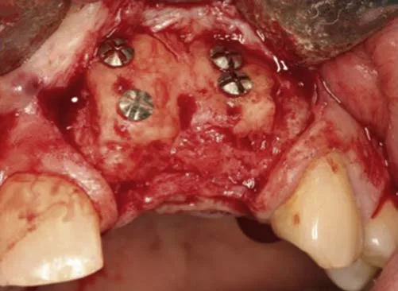
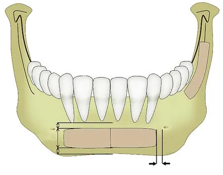

نسخه استخراجشده؛ ترجمه یا تأیید علمی انجام نشده است. وضعیت: captured
وقتی حجم استخوان کافی نیست، چند تکنیک بازسازی کنار هم قرار میگیرند: گستراندن استخوان (اسپلیت ریج)، فاکتورهای رشد، پیوند ذرهای (آلوگرفت، زنوگرفت، آلوپلاست) و پیوند اتوژن از محلهای دهندهی داخلدهانی یا خارجدهانی.
اما پرسش کلیدی این است: چه چیزی استخوان کورتیکال مندیبل را متمایز میکند؟
پاسخ روشن است: استخوان کورتیکال برداشتهشده از مندیبل جذب کندتر و یکپارچهشدن عالی با استخوان میزبان نشان میدهد — در مقایسه با پیوندهای کنسلوس. و دلیلش هم روشن است: مقادیر زیاد استئوسیت، فاکتورهای رشد و پروتئین مورفوژنیک استخوان (BMP) در استخوان کورتیکال.
پیامد عملیاش را نگه دار: چون پیوندهای مندیبولار حداقل جذب را نشان میدهند، افزایش حجم بهدستآمده قابلپیشبینی است و در بیشتر محلهای برنامهریزیشده میتوان ایمپلنت گذاشت.
و طرف دیگر معاوضه: در پیوندهای بینابینی، مطالعات نشان دادهاند پیوندهای کنسلوس و مغز ذرهای در برابر بلاک اتوژن، رگزایی سریعتر و فعالیت استئوژنیک بیشتری دارند؛ و گرافت کنسلوس با گذر زمان کاملاً ترمیم میشود در حالی که گرافت کورتیکال ترکیبی از استخوان نکروتیک و زنده باقی میماند.
پس قاعده این نیست که یکی بهتر است؛ قاعده این است که کورتیکال برای حفظ حجم و کنسلوس برای سرعت زیستی انتخاب میشود.
تاریخچهی کوتاه: نخستین بلاک اتولوگی که همراه ایمپلنتهای استئواینتگره توصیف شد، از کرست ایلیاک بود؛ ولی برداشت ایلیاک بیمارستانی و زیر بیهوشی عمومی است و اختلال حسی و راهرفتن بیشتری دارد. از ۱۹۹۲ اندیکاسیون بلاکهای داخلدهانی سیمفیز و راموس همراه با ایمپلنتهای اندواستئال گسترش یافت؛ دسترسی آسانتر، جراحی کوتاهتر و ناراحتی کمتر محل دهنده، مزیت اصلی آنهاست.

سیمفیز و ناحیهی راموس دو مورد از محبوبترین محلهای برداشت برای نقصهای داخلدهانیاند. اما این دو معادل نیستند.
حجم: در مقایسهی محلهای دهندهی داخلدهانی برای پیوند اونلی، حجم گرافت سیمفیز تقریباً دو برابر راموس گزارش شده است.
موربیدیتی حسی — و این جایی است که ترازو برمیگردد: پس از ۱۸ ماه، بیش از ۵۰ درصد بیمارانی که محل برداشتشان سیمفیز بوده هنوز تغییر حس داشتهاند؛ در حالی که هیچیک از بیماران گروه راموس در ۱۸ ماه علامتی گزارش نکردهاند.
و مسئله فقط حس نیست: پاسخ منفی پالپی در ۱۶ درصد بیماران پس از گرافت سیمفیز گزارش شده که در ۶ تا ۱۲ ماه کاملاً برطرف شد.
بافت نرم: باز شدن برش وستیبولار در گرافت سیمفیز رخ میدهد، در حالی که در محل دهندهی راموس معمولاً شایع نیست.
مجموع اینها یک نتیجهی عملی میسازد: راموس گزینهی اول برای بلاک است، بهویژه وقتی مندیبل خلفی نیاز به افزایش دارد. سیمفیز حجم بیشتری میدهد، ولی هزینهی حسی و پالپی و بافتنرمیاش بالاتر است. با این حال انتخاب محل دهنده به اندازهی نقص بستگی دارد: وقتی عرض گرافت بیش از ۴ میلیمتر یا افزایش عمودی چشمگیر لازم است، سیمفیز بهخاطر ماهیت کورتیکوکنسلوس و حجم بیشترش ترجیح دارد؛ برای نیاز کمتر از ۴ میلیمتر عرض، راموس.
گزینهی سوم — توبروزیته: گرافت توبروزیته میتواند بهصورت ذرهای و در برخی موارد بهصورت بلاک استفاده شود. برداشتش پس از بازتاب فلپ موکوپریوستیال با رانژور دوکاره یا چیزل انجام میشود؛ چیزل قطعهی بزرگتری میدهد ولی خطر ورود به سینوس ماگزیلا را بالا میبرد. استخوان توبروزیته معمولاً D4 و کنسلوس است.
گزینهی چهارم — هستههای ترفاین: اگر بلاک مونوکورتیکال بزرگ اندیکاسیون ندارد، میتوان هستههای استخوانی دایرهای با قطر ۴ تا ۱۰ میلیمتر را با ترفاین برداشت. ترفاینهای با قطرهای مختلف میتوانند هستههایی با طولهای متفاوت تا کورتکس لینگوال مندیبل بردارند. همین کار در راموس هم بهعنوان جایگزین بلاک انجام میشود.
و یک هشدار دربارهی هستهها: حیاتی است هستههای استخوانی در فاز ترمیم تثبیت و بیحرکت شوند، وگرنه به مندیبل میزبان جوش نمیخورند.
